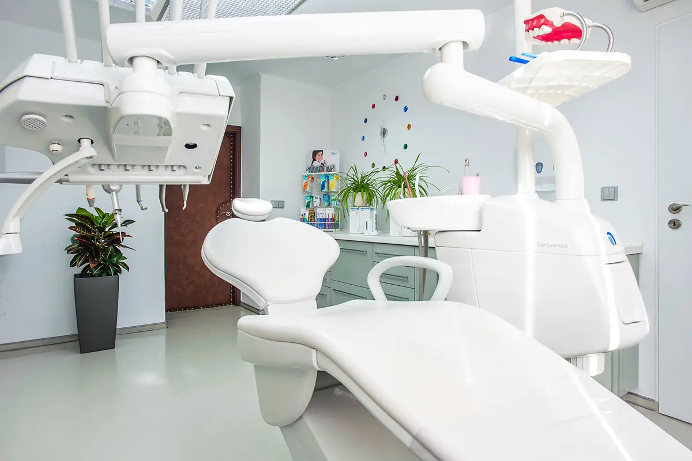
Zubní ordinace Ostrava · Českobratrská
Zdravý a krásný úsměv může mít každý
Kvalitní zubař pro Váš krásný a zdravý úsměv. Prvotřídní péče: kvalita, bezbolestnost, vysoká estetika a záruka dlouhodobých výsledků. Stomatologie nás baví.
Galerie úsměvů
U nás si vše můžete prohlédnout, fotíme před a po. Veškeré fotografie jsou naše práce bez úprav (optimalizováno pro web). Jsme precizní a máme rádi detaily.
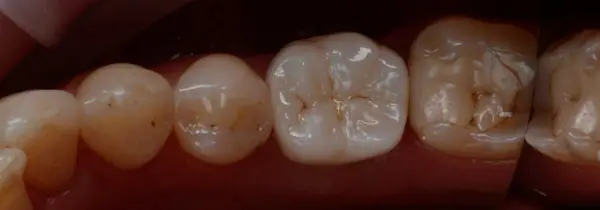
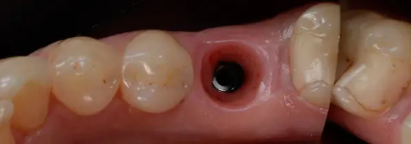
PředPo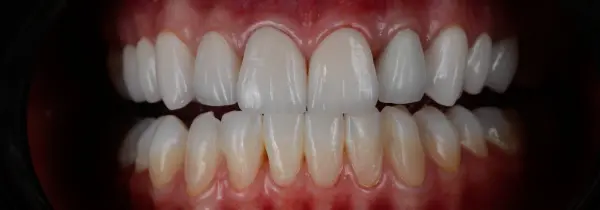
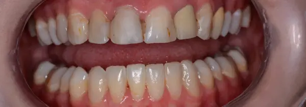
PředPo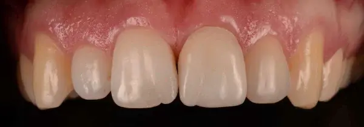
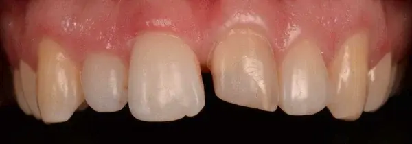
PředPo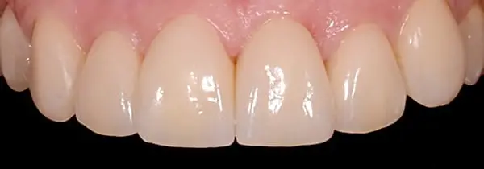
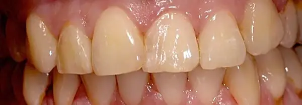
PředPo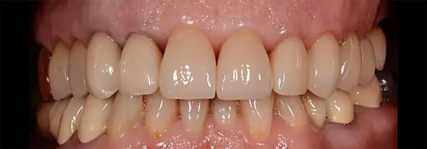
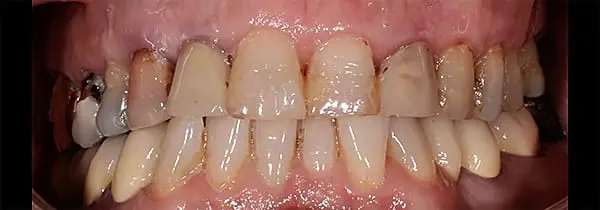
PředPo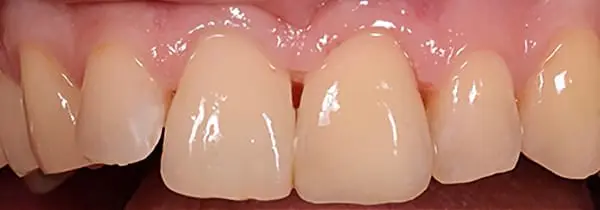
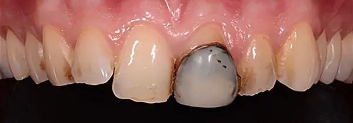
PředPo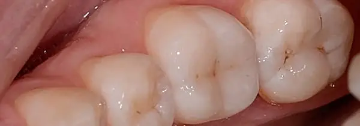
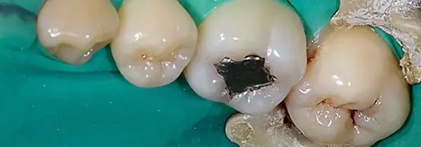
PředPoNaše služby
Vstupní prohlídka
Mikroskop a rentgen, plán léčby a cena předem.
VíceMikroskopické ošetření
Ošetření pod operačním mikroskopem.
VíceOšetření kazů
Šetrné odstranění kazu a estetická výplň.
VíceZubní implantáty
Náhrada jednoho i více zubů.
VíceKeramické výplně, korunky a můstky
Celokeramické práce vyrobené v ordinaci.
VíceEstetické fazety
Úprava tvaru, barvy a řady zubů.
VíceInhalační analgetikum
Klidné ošetření bez strachu.
VíceCAD CAM systém Cerec
Korunka vyrobená během návštěvy.
VíceČasto kladené otázky
Co mě čeká při první návštěvě?
Vstupní prohlídka trvá 30 až 60 minut. S pomocí operačního mikroskopu a rentgenu zjistíme stav zubů a probereme, jak si představujete výsledek. Následuje individuální léčebný, časový a finanční plán. Podrobnosti najdete v sekci Příjem nových pacientů a Vstupní prohlídka.
Jak se k Vám dostanu?
MHD: zastávky Husův sad, Most Pionýrů, Stodolní, Důl Jindřich. Autem: Prokešovo náměstí, parkování zdarma pro pacienty v podzemních Garážích Ostrava.
Zubní péče a současnost
Technická vyspělost třetího tisíciletí se projevuje i v zubním lékařství. Je normální mít zuby v pořádku, bez bolesti, otoků a permanentních „oprav“. Nabízíme kvalitu, bezbolestnost a trvanlivost ošetření.
Proč musím platit zákroky, když jsem řádně pojištěn u své ZP?
Zdravotní pojištění slouží pro onkologická onemocnění, úrazové stavy a závažné operační zákroky. Pojišťovna hradí pouze základní léčbu, z pohledu dnešní stomatologie dávno překonanou. Kvalitní zákroky náročné na čas, přesnost a kvalitu zhotovení hradí pacient. Pomůžeme Vám změnit náhled na zubní péči tak, abyste se k nám těšili.
Co mám dělat, když mě bolí zub?
Vždy prosím telefonujte (734 312 743), případně nám zanechte vzkaz pomocí kontaktního formuláře. Pacienti v léčebném programu dostanou nejbližší možný termín, máme pro ně vyhrazený čas.
Kde nás najdete
Českobratrská 7/2227, 702 00 Ostrava
- Po–Čt
- 8:00–17:00
- Pá
- 8:00–12:00
- So–Ne
- Zavřeno
Klimatizace a Wi-Fi zdarma. Parkování pro pacienty zdarma v garážích na Prokešově náměstí, cca 300 m.
Objednat konzultaciZobrazit mapuPřijímáme nové pacienty
MDDr. Adam Bilski a MDDr. Tímea Pilipová rádi přijmou nové pacienty. K vedoucímu lékaři MUDr. Igoru Kuczinskému se můžete objednat na specializované zákroky: rekonstrukce, estetické úpravy, implantace a mikroskopickou endodoncii. Ošetření dentální hygieny je dostupné i pro neregistrované pacienty.
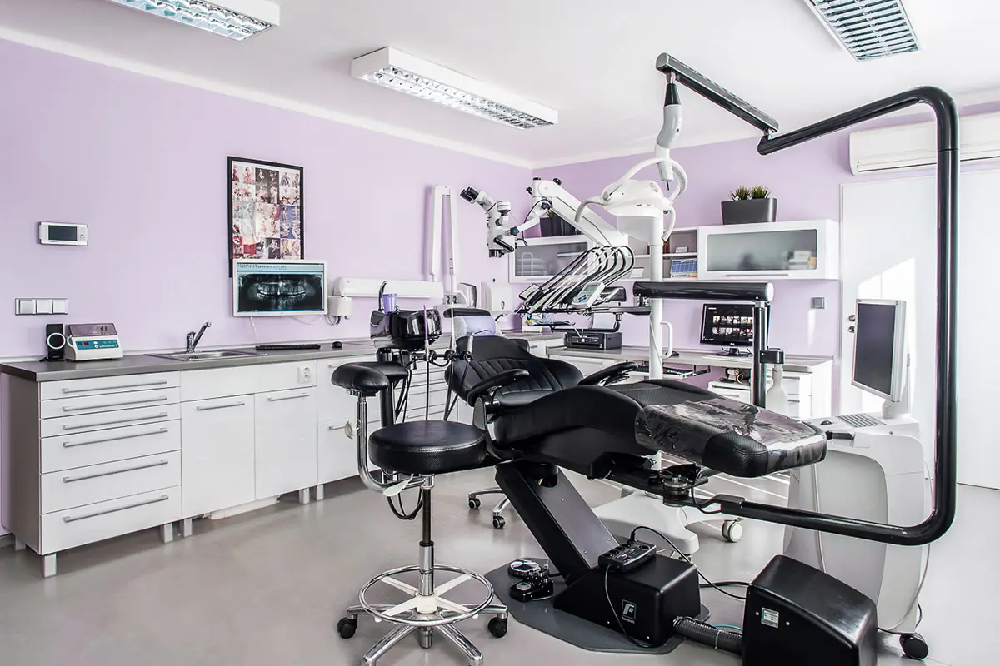
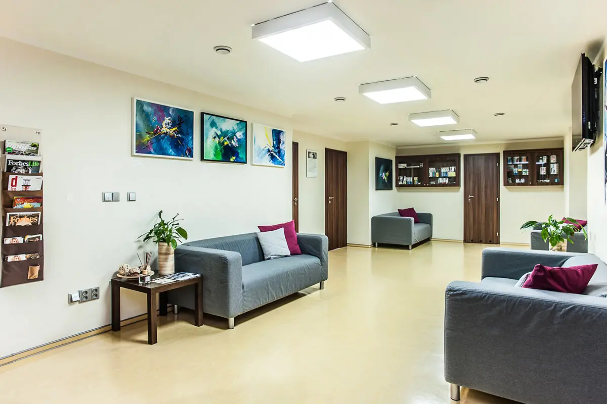
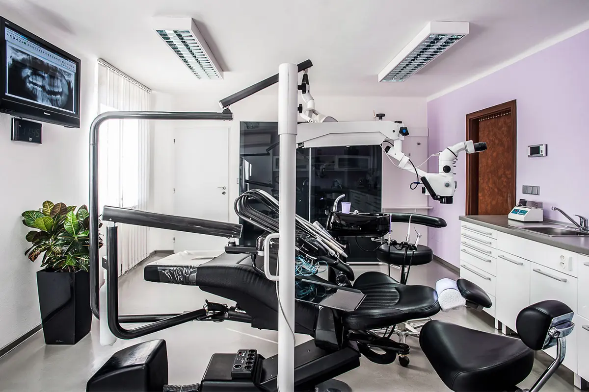
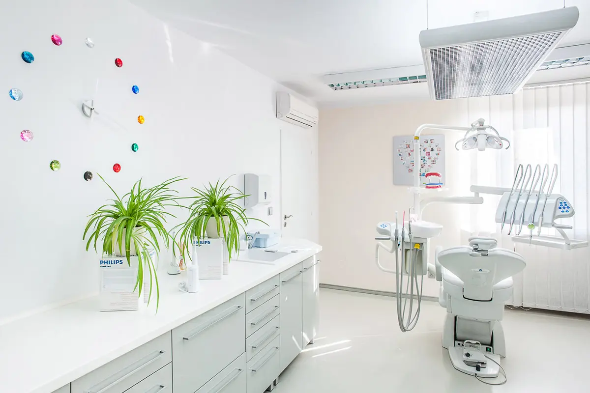